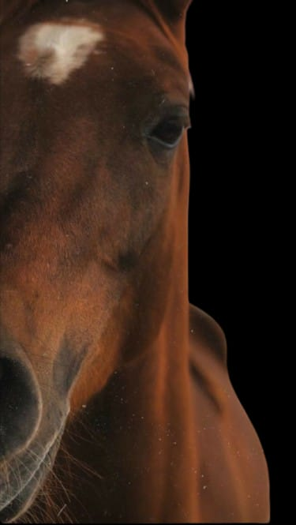
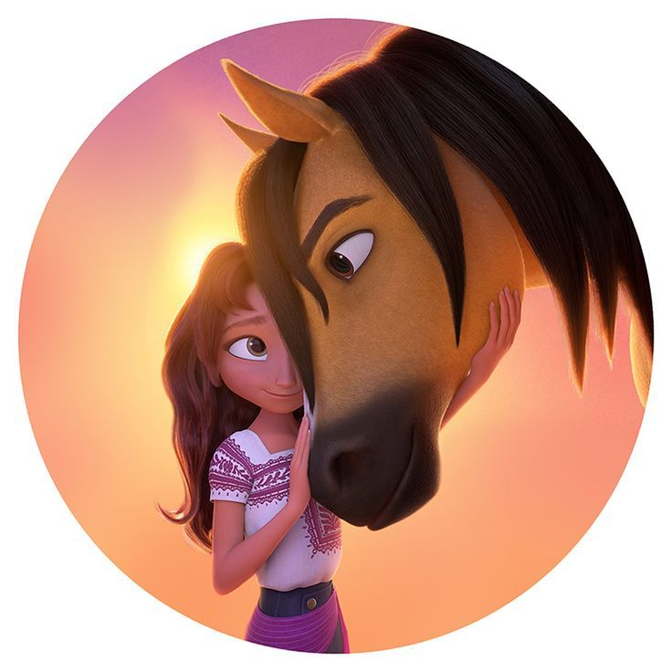
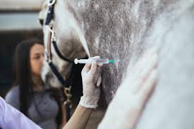
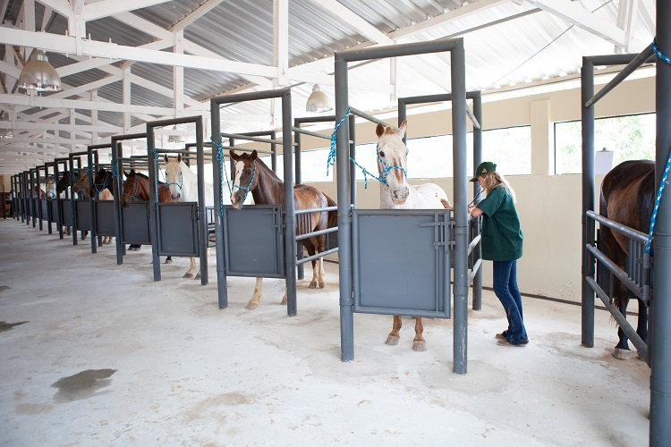
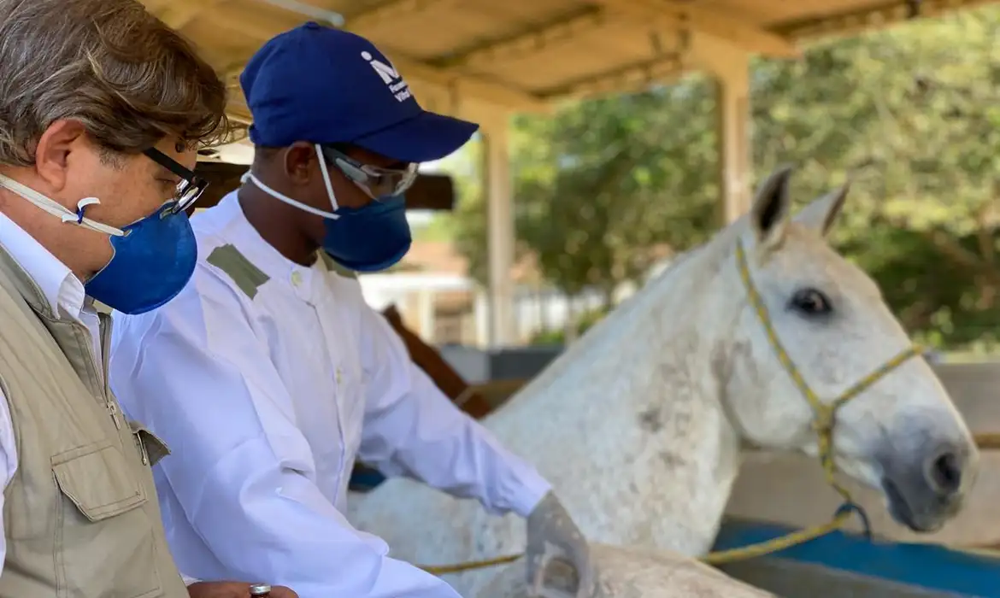
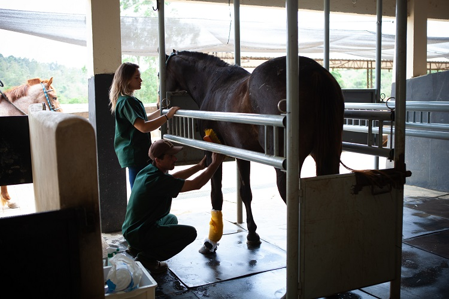

CAVALOS HERÓIS QUE SALVAM VIDAS COM SEUS ANTICORPOS
A Você sabia que cavalos, além de serem ótimos para passeios e corridas, também são grandes heróis na medicina? Isso mesmo! Esses animais incríveis ajudam a salvar vidas humanas, e tudo começa com os anticorpos que eles produzem. Vamos explicar como!
O Que È a Soroterapia?
A soroterapia é um tratamento que usa o sangue dos cavalos para salvar vidas. Os cientistas injetam uma versão enfraquecida de um veneno ou vírus no cavalo. O corpo do animal reage, produzindo anticorpos para combater a toxina. Depois, o sangue do cavalo é recolhido, e os anticorpos são extraídos para tratar pessoas que foram envenenadas ou infectadas por doenças como raiva, tétano e até veneno de cobra. Por Que Usar Cavalos? Você deve estar pensando: "Por que escolher cavalos e não outro animal?" A resposta é simples: os cavalos produzem uma quantidade impressionante de anticorpos, muito mais do que outros animais. Isso faz com que sejam os melhores para esse processo. E o mais interessante é que eles ajudam de uma maneira bem única, se tornando, literalmente, os “super-heróis” da medicina. Impacto Real A soroterapia já salvou muitas vidas, principalmente em áreas tropicais onde picadas de cobra são bem comuns. Nesses locais, o tratamento com soro de cavalo é um dos mais eficazes para neutralizar o veneno de serpentes e até outros venenos perigosos, como os de aranhas. O soro dos cavalos é fundamental para muitas pessoas que, sem ele, não teriam outras opções rápidas de tratamento. De acordo com a National Geographic Brasil, isso acontece porque o acesso a hospitais nem sempre é fácil, principalmente em regiões remotas. O Futuro da Soroterapia Com os avanços na biotecnologia, espera-se que o uso dos anticorpos dos cavalos ajude ainda mais no tratamento de doenças em humanos. Em breve, esses animais podem ser uma parte fundamental de novos tratamentos que vão muito além dos venenos, ajudando na cura de várias doenças. Então, da próxima vez que você ver um cavalo, lembre-se: eles são mais do que só animais de corrida – são verdadeiros heróis, salvando vidas com seus poderosos anticorpos! Fonte: National Geographic Brasil (Como é feito o soro antiofídico que combate o veneno de cobra) G1 (O que é soroterapia e como ela ajuda a salvar vidas)Galeria



